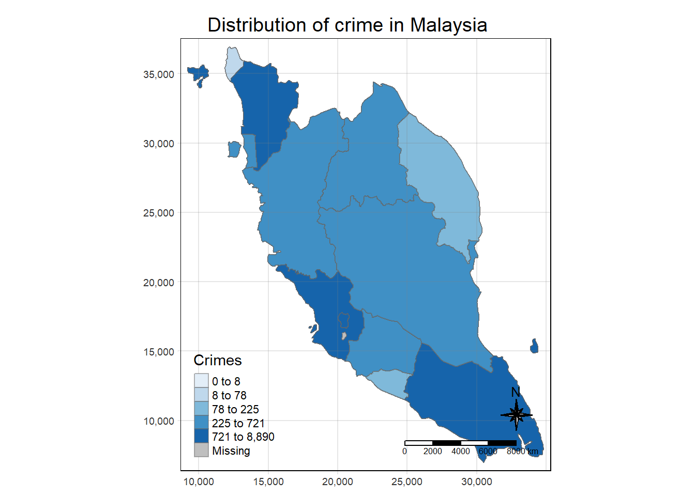

pacman::p_load(sf, st, tidyverse, raster, tmap, tmaptools, ggplot2, spatstat, sfdep, dplyr)take home exercise 3
1. Introduction
This study investigates the spatial distribution and evolution of crime in Malaysia over recent years. By employing advanced spatial analysis techniques, we aim to identify hotspots, coldspots, and emerging trends in crime patterns. Our analysis utilizes a comprehensive dataset of crime incidents, including location, type, and date of occurrence.
2. UI
When we’re building a Shiny application, we work with three main components headerPanel, sidebarPanel, and mainPanel. These are the building blocks for our app’s user-interface.
Sidebar Panel (
sidebarPanel): This is a vertical panel on the side of the application. It is displayed with a distinct background color and typically contains input controls.Main Panel (
mainPanel): This is the primary area of the application and it typically contains outputs. The main panel displays the output (like maps, plots, tables, etc.) based on the input given in the sidebar panel.Header Panel (
headerPanel): This is the topmost part of the UI where you can place the title of our application. It is not always necessary but can be used to provide a title or brief description of our application.
3. Importing data and packages into R
3.1 Datasets being used
There are two datasets being used in this exercise.
Malaysia – Crime by District and Crime Type from data.gov.my in csv format.
Malaysia GIS border data with included administrative regions in shapefile format.
We first import the crime rate csv file into R.
crime_district <- read_csv("data/aspatial/crime_district.csv")Rows: 16758 Columns: 6
── Column specification ────────────────────────────────────────────────────────
Delimiter: ","
chr (4): state, district, category, type
dbl (1): crimes
date (1): date
ℹ Use `spec()` to retrieve the full column specification for this data.
ℹ Specify the column types or set `show_col_types = FALSE` to quiet this message.Next, we import the administrative regions of Malaysia.
malaysia_sf <- read_sf(dsn = "data/geospatial/my_shp",
layer = "my") %>%
st_as_sf(coords =c(
"longitude", "latitude"),
crs = 4326) %>%
st_transform(crs = 3167)However in this case study, for ease of analysis, we choose to focus on West Malaysia, and thus will be filtering out Sarawak, Sabah and Labuan.
malaysia_sf <- malaysia_sf %>%
filter(name != 'Sabah') %>%
filter(name != 'Sarawak') %>%
filter(name != 'Labuan')malaysia_sfSimple feature collection with 13 features and 3 fields
Geometry type: MULTIPOLYGON
Dimension: XY
Bounding box: xmin: 9213.943 ymin: 6984.585 xmax: 34801.1 ymax: 36915.7
Projected CRS: Kertau (RSO) / RSO Malaya (ch)Warning: Could not parse expression: '`British` * `chain` * (`Sears` * ^(1922)
* `truncated`)'. Returning as a single symbolic unit()# A tibble: 13 × 4
id name source geometry
* <chr> <chr> <chr> <MULTIPOLYGON>
1 MY09 Perlis https://simplemaps.com (((13243.37 35914.48, 13234 358…
2 MY02 Kedah https://simplemaps.com (((12252.25 34456.09, 12253.05 …
3 MY03 Kelantan https://simplemaps.com (((25139.25 32186.53, 25126.65 …
4 MY08 Perak https://simplemaps.com (((13901.63 28257.42, 13942.83 …
5 MY07 Pulau Pinang https://simplemaps.com (((13089.51 30650.82, 13091.34 …
6 MY10 Selangor https://simplemaps.com (((15731.12 21151.12, 15731.84 …
7 MY05 Negeri Sembilan https://simplemaps.com (((20577.04 14282.29, 20577.1 1…
8 MY04 Melaka https://simplemaps.com (((22052.41 13155.02, 22053.93 …
9 MY01 Johor https://simplemaps.com (((25430.04 13316.77, 25445.66 …
10 MY06 Pahang https://simplemaps.com (((18716.85 25373.75, 18937.27 …
11 MY11 Terengganu https://simplemaps.com (((25785.88 26213.92, 25817.33 …
12 MY14 Kuala Lumpur https://simplemaps.com (((20558.2 17637.01, 20597.63 1…
13 MY16 Putrajaya https://simplemaps.com (((20360.89 15813.13, 20336.92 …3.2 Geospatial Data Wrangling
3.2.1 Resolving data duplication
There is also an issue of double counting data, where state ‘Malaysia’ comprises of all the crimes, and type of crime ‘all’ also comprises of its type of crime.
As we are doing by state and not by district, we remove the double counting caused by district. At the same time, we will also remove Sabah and Sarawak, which are not the focus of our current analysis.
crime_district <- crime_district %>%
filter(state !='Malaysia') %>%
filter(type !='all') %>%
filter(district =='All') %>%
filter(state != 'Sabah') %>%
filter(state != 'Sarawak') %>%
filter(state != 'Labuan')
crime_district# A tibble: 1,008 × 6
state district category type date crimes
<chr> <chr> <chr> <chr> <date> <dbl>
1 Johor All assault causing_injury 2016-01-01 708
2 Johor All assault causing_injury 2017-01-01 614
3 Johor All assault causing_injury 2018-01-01 578
4 Johor All assault causing_injury 2019-01-01 599
5 Johor All assault causing_injury 2020-01-01 447
6 Johor All assault causing_injury 2021-01-01 365
7 Johor All assault causing_injury 2022-01-01 333
8 Johor All assault murder 2016-01-01 70
9 Johor All assault murder 2017-01-01 66
10 Johor All assault murder 2018-01-01 43
# ℹ 998 more rows3.2.2 Resolving mismatch of state names
Some of the province names are mismatched between the crime rate csv file and the shpfile.
crime_district <- crime_district %>%
mutate(state = replace(state, state == 'W.P. Kuala Lumpur', 'Kuala Lumpur'))
crime_district# A tibble: 1,008 × 6
state district category type date crimes
<chr> <chr> <chr> <chr> <date> <dbl>
1 Johor All assault causing_injury 2016-01-01 708
2 Johor All assault causing_injury 2017-01-01 614
3 Johor All assault causing_injury 2018-01-01 578
4 Johor All assault causing_injury 2019-01-01 599
5 Johor All assault causing_injury 2020-01-01 447
6 Johor All assault causing_injury 2021-01-01 365
7 Johor All assault causing_injury 2022-01-01 333
8 Johor All assault murder 2016-01-01 70
9 Johor All assault murder 2017-01-01 66
10 Johor All assault murder 2018-01-01 43
# ℹ 998 more rows3.2.3 Performing relational join
crime_district_malaysia <- malaysia_sf %>%
left_join(crime_district,
by = c("name" = "state")) %>%
dplyr::select(2, 4, 6:9)
crime_district_malaysiaSimple feature collection with 1009 features and 5 fields
Geometry type: MULTIPOLYGON
Dimension: XY
Bounding box: xmin: 9213.943 ymin: 6984.585 xmax: 34801.1 ymax: 36915.7
Projected CRS: Kertau (RSO) / RSO Malaya (ch)Warning: Could not parse expression: '`British` * `chain` * (`Sears` * ^(1922)
* `truncated`)'. Returning as a single symbolic unit()# A tibble: 1,009 × 6
name geometry category type date crimes
<chr> <MULTIPOLYGON> <chr> <chr> <date> <dbl>
1 Perlis (((13243.37 35914.48, 13234 35834.73… assault caus… 2016-01-01 52
2 Perlis (((13243.37 35914.48, 13234 35834.73… assault caus… 2017-01-01 47
3 Perlis (((13243.37 35914.48, 13234 35834.73… assault caus… 2018-01-01 45
4 Perlis (((13243.37 35914.48, 13234 35834.73… assault caus… 2019-01-01 60
5 Perlis (((13243.37 35914.48, 13234 35834.73… assault caus… 2020-01-01 40
6 Perlis (((13243.37 35914.48, 13234 35834.73… assault caus… 2021-01-01 38
7 Perlis (((13243.37 35914.48, 13234 35834.73… assault caus… 2022-01-01 33
8 Perlis (((13243.37 35914.48, 13234 35834.73… assault murd… 2016-01-01 0
9 Perlis (((13243.37 35914.48, 13234 35834.73… assault murd… 2017-01-01 2
10 Perlis (((13243.37 35914.48, 13234 35834.73… assault murd… 2018-01-01 1
# ℹ 999 more rowscrime_district_malaysia_sf <- st_as_sf(crime_district_malaysia)
st_crs(crime_district_malaysia_sf) <- st_crs(malaysia_sf)
print(st_crs(crime_district_malaysia_sf))Coordinate Reference System:
User input: EPSG:3167
wkt:
PROJCRS["Kertau (RSO) / RSO Malaya (ch)",
BASEGEOGCRS["Kertau (RSO)",
DATUM["Kertau (RSO)",
ELLIPSOID["Everest 1830 (RSO 1969)",6377295.664,300.8017,
LENGTHUNIT["metre",1]]],
PRIMEM["Greenwich",0,
ANGLEUNIT["degree",0.0174532925199433]],
ID["EPSG",4751]],
CONVERSION["Rectified Skew Orthomorphic Malaya Grid (chain)",
METHOD["Hotine Oblique Mercator (variant A)",
ID["EPSG",9812]],
PARAMETER["Latitude of projection centre",4,
ANGLEUNIT["degree",0.0174532925199433],
ID["EPSG",8811]],
PARAMETER["Longitude of projection centre",102.25,
ANGLEUNIT["degree",0.0174532925199433],
ID["EPSG",8812]],
PARAMETER["Azimuth of initial line",323.0257905,
ANGLEUNIT["degree",0.0174532925199433],
ID["EPSG",8813]],
PARAMETER["Angle from Rectified to Skew Grid",323.130102361111,
ANGLEUNIT["degree",0.0174532925199433],
ID["EPSG",8814]],
PARAMETER["Scale factor on initial line",0.99984,
SCALEUNIT["unity",1],
ID["EPSG",8815]],
PARAMETER["False easting",40000,
LENGTHUNIT["British chain (Sears 1922 truncated)",20.116756],
ID["EPSG",8806]],
PARAMETER["False northing",0,
LENGTHUNIT["British chain (Sears 1922 truncated)",20.116756],
ID["EPSG",8807]]],
CS[Cartesian,2],
AXIS["(E)",east,
ORDER[1],
LENGTHUNIT["British chain (Sears 1922 truncated)",20.116756]],
AXIS["(N)",north,
ORDER[2],
LENGTHUNIT["British chain (Sears 1922 truncated)",20.116756]],
USAGE[
SCOPE["Engineering survey, topographic mapping."],
AREA["Malaysia - West Malaysia onshore."],
BBOX[1.21,99.59,6.72,104.6]],
ID["EPSG",3167]]3.3 Plotting choropleth map of distribution of crime
tmap_mode("plot")tmap mode set to plottingtm_shape(crime_district_malaysia) +
tm_fill("crimes",
style = "quantile",
palette = "Blues",
title = "Crimes") +
tm_layout(main.title = "Distribution of crime in Malaysia",
main.title.position = "center",
main.title.size = 1.2,
legend.height = 0.45,
legend.width = 0.35,
frame = TRUE) +
tm_borders(alpha = 0.5) +
tm_compass(type="8star", size = 2) +
tm_scale_bar() +
tm_grid(alpha =0.2)Warning: Could not parse expression: '`British` * `chain` * (`Sears` * ^(1922)
* `truncated`)'. Returning as a single symbolic unit()
3.4 Global Measures of Spatial Autocorrelation
3.4.1 Computing Contiguity Spatial Weights
We now generate the neighbours list.
wm_q <- crime_district_malaysia %>%
mutate(nb = st_contiguity(geometry),
wt = st_weights(nb,
style = "W"),
.before=1)3.4.2 Moran’s I test
The code chunk below performs Moran’s I statistical testing using moran.test() of sfdep.